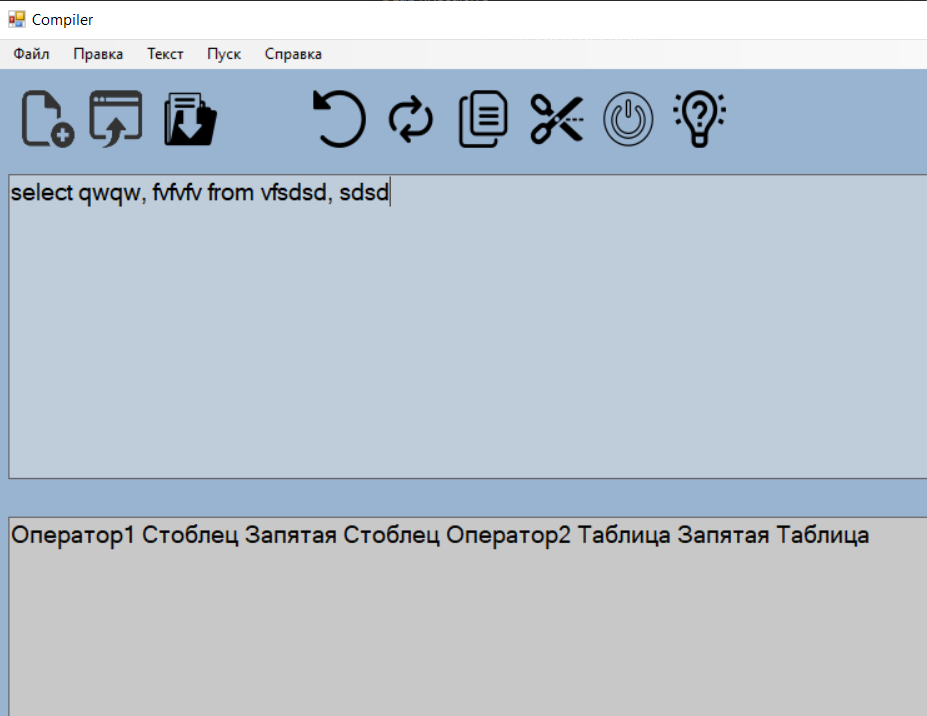
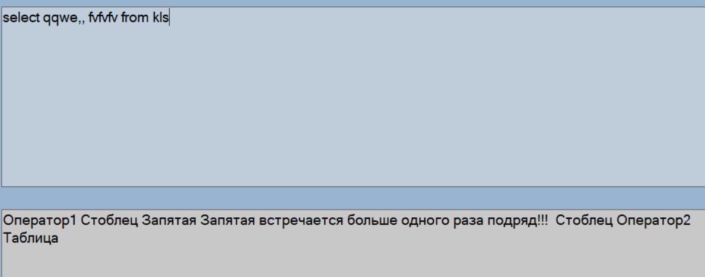
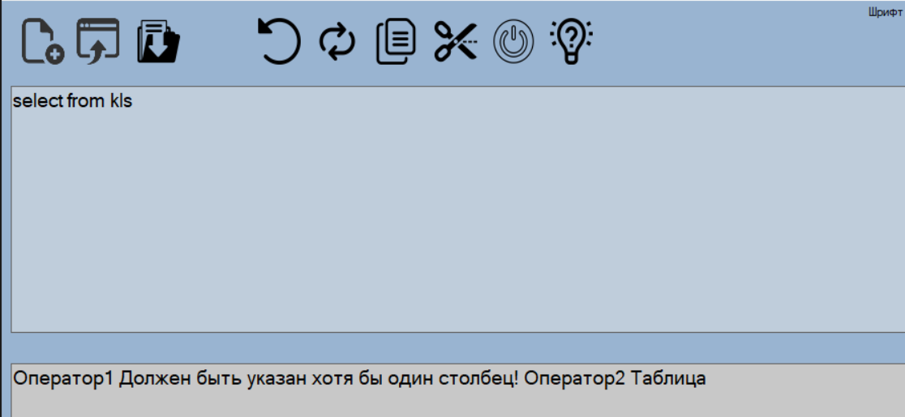
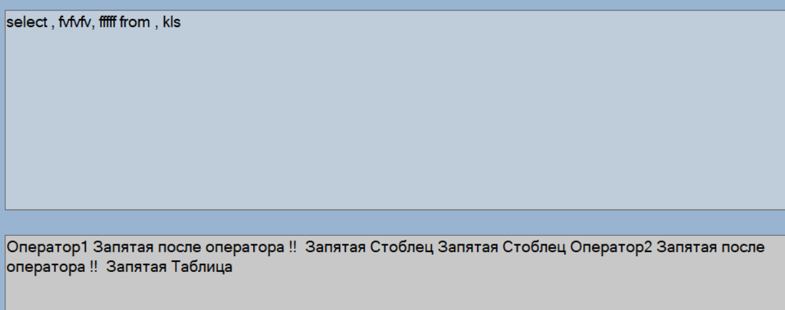
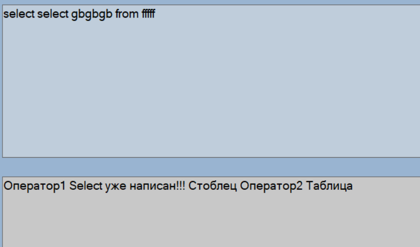

Цель работы: Изучение и использование метода рекурсивного спуска для синтаксического анализа.
В соответствии с заданным вариантом задания:
Вариант:

Рис.1. Пример верного ввода.

Рис.2. Пример ошибки ввода запятой два раза подряд.

Рис.3. Пример ошибки ввода без столбцов.

Рис.4. Пример ошибки добавления запятой после операторов.

Рис.5. Пример ошибки ввода одного оператора два раза.